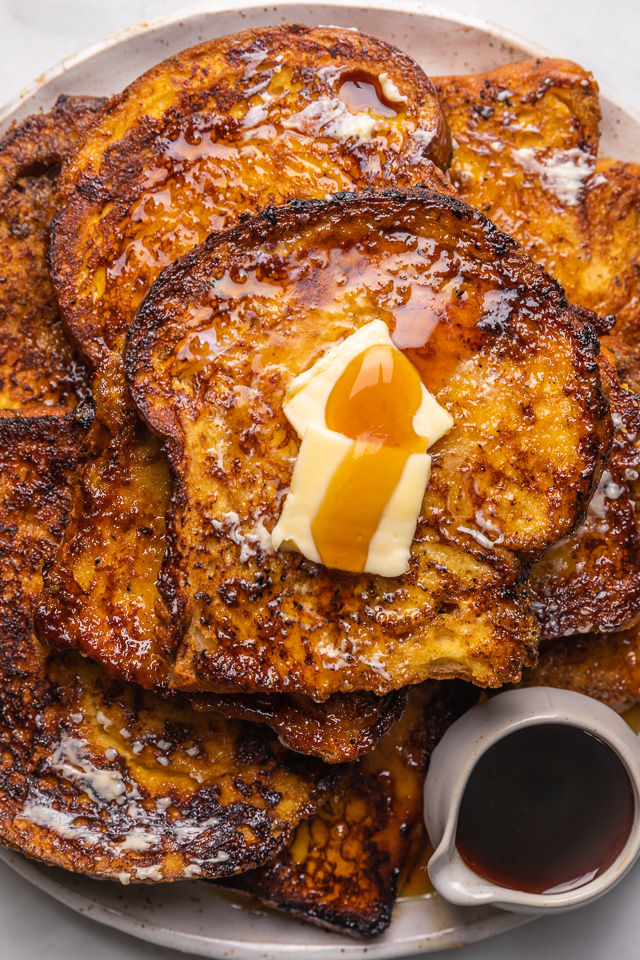

French Toast

Description
French toast is a dish made of sliced bread soaked in beaten eggs and typically milk,
then pan fried. Alternative names and variants include "eggy bread", "Bombay toast",
"gypsy toast", and "poor knights" (of Windsor).
When French toast is served as a sweet dish, milk, sugar, vanilla or cinnamon are also
commonly added before pan-frying, and then it may be topped with sugar (often powdered sugar),
butter, fruit, or syrup.
Ingredients
- White Bread
- Egg
- Vanilla and Cinnamon
- Salt
- Butter
Steps
- Cut the bread to appropriately thick slices
- Take a bowl that is easy for dunking the bread slices into. Beat together 2 eggs and two-thirds of a cup of milk.
- Add a pinch of Salt.
- Add a quarter teaspoon of ground Cinnamon.
- Add a teaspoon of Vanilla extract to add flavour.
- Dunk 6 slices of the cut bread in the mixture one by one until it's fully soaked on both sides.
- Lightly butter a skillet or griddle and heat it over a medium high heat.
- Place the soaked bread on the griddle and cook until each side is golden brown (Remember to flip each side over half way through!).
- Serve the hot french toast with some berries or a drizzle of maple syrup